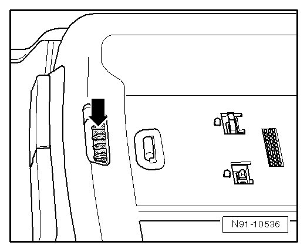
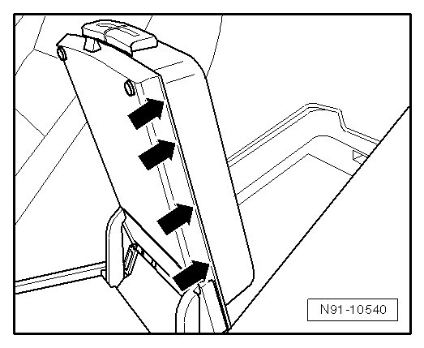

Telephone Cradle Base Plate
Telephone Cradle Base Plate
Special Tools and Equipment
• Trim removal wedge (3409)
Removing
- Open center armrest cover.
- Remove telephone cradle. Refer to --> [ Telephone Mount ] Telephone Mount.
- Press securing lever in center armrest lock - arrow - with Trim Removal Wedge (3409) until it reaches disengaging point.

- Now fold up lower part of center armrest.
- At locations marked with - arrows -, pry base plate out of center armrest using Trim Removal Wedge (3409).

To completely remove base plate, spiral cable connector must be disconnected. It is installed in center console on left side in area of front center armrest. To reach connector and to be able to completely remove base plate with wiring harness, center console must be removed.
Installing
Install in reverse order of removal.